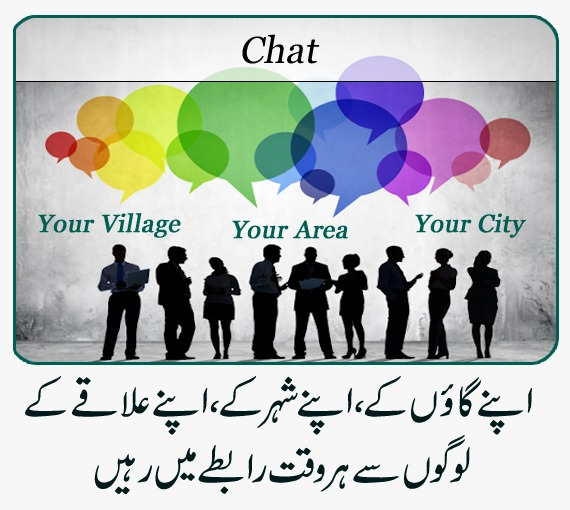

<!--
  Generated template for the FoundationLandingPage page.

  See http://ionicframework.com/docs/components/#navigation for more info on
  Ionic pages and navigation.
-->
<ion-header>
  
</ion-header>

<ion-content>


  <div class="row" style="margin-top: 15%;">
    <div (click)="logout()" style="float: left; width: 50%;">
      
    </div>
    <div (click)="goToNewChat()" style="float: left; width: 50%;">
      
    </div>

  </div>


  <div class="row">

    <div (click)="takePicture()" style="float: left; width: 50%;">
      
    </div>
    <div (click)="goToNewChatDetails()" style="float: left; width: 50%;">
      
    </div>
  </div>


  <div class="row">
    <div style="float: left; width: 50%;">
      
    </div>
    <div style="float: left; width: 50%;">
      
    </div>

  </div>


</ion-content>

<ion-footer>
  
</ion-footer>